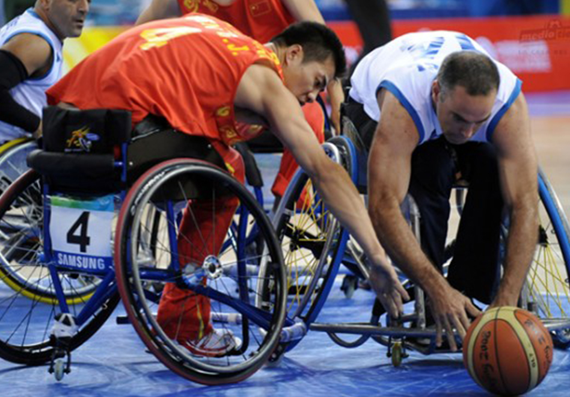

Basquetbol en Silla de Ruedas 3 (BSR3)
El juego consiste en formar
dos equipos por mitad de cancha.
Cada equipo conformado por 3 personas
incluida una persona en silla de ruedas.
Deberán encestar tantas veces les sea posible
hasta llegar a 3 puntos.
Reglas:
Solo podrán encestar las personas en silla de ruedas.
La silla es parte del jugador, por lo que el contacto explícito
con la silla no esta permitido (es falta personal).
No está permitido dar más de dos impulsos (o contactos) sobre las
ruedas sin botar el balón, esto supondría “pasos”.
No existe el “doble regate”, se puede botar el balón y cogerlo con
dos manos cuantas veces se desee.
Cada canasta tiene el valor de 1 punto.
Las medidas del campo, la altura de la canasta y las reglas temporales
son las mismas que en baloncesto a pie.
